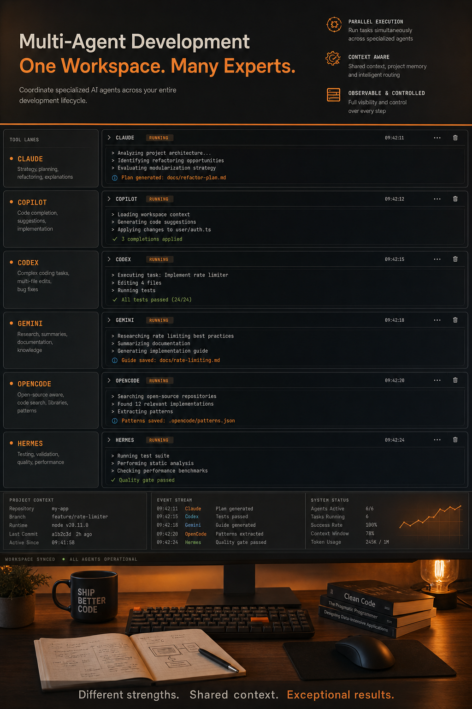

AiDiy は code1〜code6 パネルへ複数の Code AI を流し込み、独自 CLI の aidiy_hermes まで含めて運用します。
Code AI の有効値として `claude_sdk`〜`aidiy_hermes` が想定されている。
`backend_hermes` は `_start.py` の常駐起動対象ではない。
`aidiy_hermes` は `backend_server/AIコア/AIコード_cli.py` から subprocess で起動される。
Code AI の有効値は `claude_sdk`、`claude_cli`、`copilot_cli`、`codex_cli`、`gemini_cli`、`opencode_cli`、`aidiy_hermes` を想定します。
`aidiy_hermes` は AiDiy に統合された on-demand のコードエージェント CLI です。